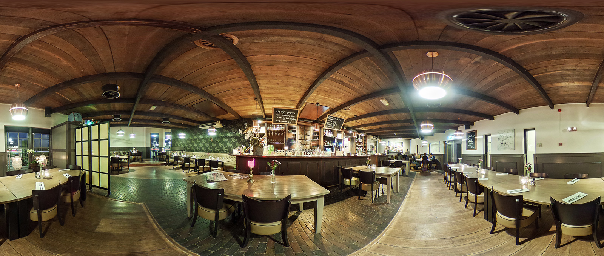
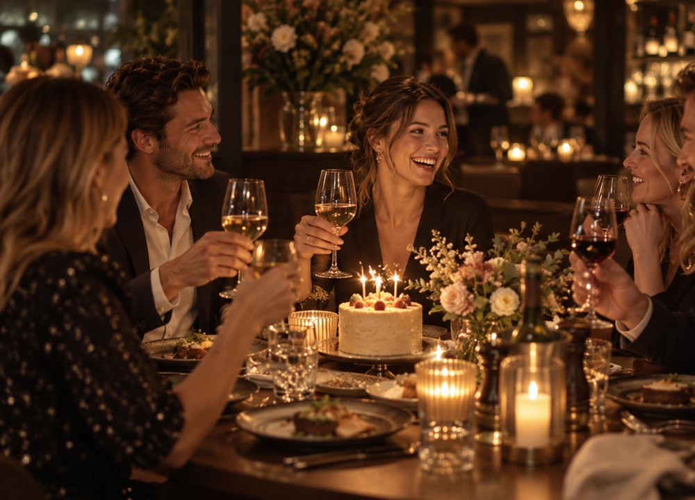
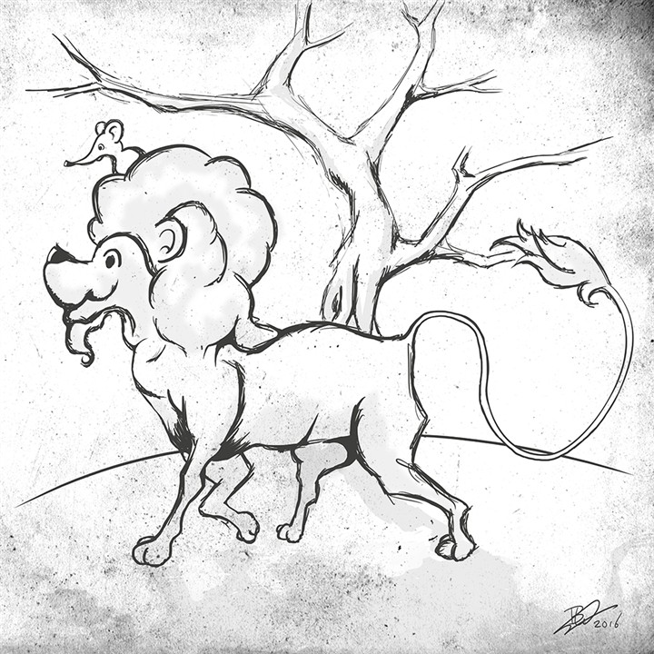
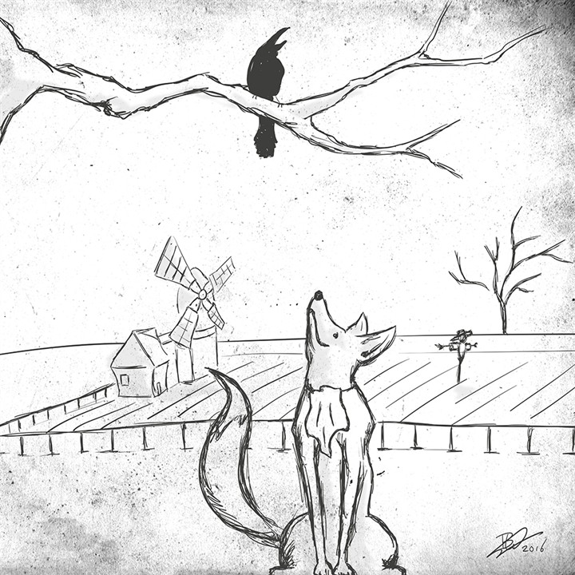

La Fontaineplein, Woerden
Fabelseten & drinken
Restaurant meets bistro. Eigentijdse gerechten in een informele, gemoedelijke sfeer, overdag en ’s avonds.
Wo, za en zo vanaf 17.00 uur; do en vr doorlopend vanaf 11.30 uur
Kerstdiner bij Fabels
Op 1e en 2e Kerstdag aan tafel vanaf 16.30 uur.
- 4 gangen vanaf €55, elke extra gang €7,50
- Kindermenu vanaf €12,50
- Reserveren vanaf 4 personen
- Zakelijk of privé vanaf 20 personen
Kom als gast en verlaat als vriend
Fabels eten & drinken ligt in de jonge wijk Snel & Polanen, aan het La Fontaineplein. Je zit op het terras of in ons ruime restaurant, voor een hapje en een drankje, een lunch of een diner.
Onze chefs werken met zoveel mogelijk eerlijke streekproducten. De kaart is gemaakt om te delen, zelf samen te stellen of gewoon één gerecht te bestellen als je minder trek hebt.
- Lunch op donderdag en vrijdag vanaf 11.30 uur
- Terras aan het plein
- De hele dag gratis parkeren voor de deur

De menukaart
Wil je een 3- of 4-gangenmenu? Vraag ons naar de mogelijkheden. Heb je speciale wensen, een allergie of intolerantie? Meld het ons, dan vertellen we je wat er kan.


Fabels special Vegetarisch Om te delen
Lunch op donderdag en vrijdag, doorlopend vanaf 11.30 uur.
Brood & Wraps
- 12-uurtje Fabels €11,50
soep, salade, broodje kroket
- Geitenkaas €9,50
vijgenchutney, druiven, ui, noten
- Warm vlees€9,50
satésaus, komkommer, gedroogde ui
- Kroket€8,50
2 stuks, mosterdmayonaise
- Pittige kip€11,50
ui, paprika, salade
- Tosti Fabels €8,50
gebakken ei, tomaat, ui
- Broodje Brie €9,50
honing, salade, noten
- Tosti Brie €9,50
honing, salade, noten
- Carpaccio€13,50
pijnboompitten, Parmezaanse kaas, gedroogde tomaat, dressing
- Gerookte Zalm€13,50
rode ui, kappertjes, cocktailsaus
- B.L.T€12,50
bacon, sla, tomaat, cocktailsaus, keuze uit frites of salade
- Broodje gezond€11,50
sla, kaas, ham, tomaat, komkommer, ei, mayonaise
- Wrap Pittige Kip€11,50
ui, paprika, salade
- Wrap Gerookte zalm€13,50
rode ui, salade, kappertjes
Warme gerechten
- Uitsmijter€13,50
keuze uit spek, carpaccio, ham/kaas, gerookte zalm (+3)
- Kipsaté Fabels €18,50
satésaus, kroepoek, gebakken uitjes, frites
- Fabels runderburger €16,50
tomaat, ui, cheddar, sla, frites, well-done
- Groenten quiche €13,50
keuze uit frites of salade
- Biefstuk Fabels €25,50
keuze uit jus & brood, frites of salade
- Vega-Burger €16,50
rode biet, tomaat, ui, mayonaise, well-done
- Flammkuchen€11,50
crème fraiche, rucola, rode ui, bacon of geitenkaas
Soep & Salade
- Soep van de dag€8,50
dagelijks wisselend
- Lauwwarme geitenkaas salade (XL + 5) €13,50
tomaat, noten, druiven, vijgencompote
- Salade Fabels (XL + 5) €13,50
gegrilde kip, croutons, tomaat, ui, dressing, gerookte zalm (+3)
- Salade carpaccio (XL + 5)€13,50
pijnboompitjes, rucola, gedroogde tomaat, Parmezaan
Extra voor bij de borrel
- Portie bitterballen€8,50
(8 stuks)
- Bittergarnituur€9,50
(10 stuks)
- Nachos €9,50
tortilla chips, crème fraîche, salsa, gesmolten Cheddar
- Flammkuchen€11,50
crème fraiche, rucola, rode ui, bacon of geitenkaas
Kinderen kiezen uit de Fabels kids selectie, met een speciale verrassing.
Voorgerechten
- Flammkuchen€11,50
crème fraiche, rucola, rode ui, bacon of geitenkaas
- Carpaccio€13,50
van rund, rucola, gedroogde tomaat, Parmezaan
- Gerookte zalm€14,50
toast, ui, kappertjes
- Gebakken mosselen€13,50
paprika, ui, knoflook
- Lauwwarme geitenkaas salade €11,50
bietjes, noten, druiven, vijgencompote, honing
- Pastei ragout €11,50
bospaddenstoelen, rucola, gedroogde tomaat, Parmezaan
- Proeverij Fabels om te delen v.a. 2 pers. €13,50 p.p
samenstelling van verschillende warme en koude gerechtjes
- Nachos €11,50
tortilla chips, crème fraîche, Guacamole, salsa, gesmolten Cheddar, jalapeño’s
- Soep van de dag€8,50
dagelijks wisselend
Fabels kids selectie
- Frikandel€6,50
- Kaassouflé€6,50
- Kroket€6,50
- Kipnuggets€6,50
Bij de KIDS selectie zit standaard mayo, appelmoes, frites en naar wens ook groenten of salade geserveerd
- Kinderijsje€3,50
keuze uit vanille, aardbei, chocolade
Bij de kids selectie zit standaard mayo, appelmoes, frites en naar wens ook groenten of salade.
Hoofdgerechten vlees
- Saté Fabels €19,50
kipdij, satésaus, kroepoek, gebakken uitjes
- Pittige kip€19,50
ui, paprika, chilisaus
- Fabulous runderburger (well-done bereid) €19,50
sla, tomaat, rode ui, cheddar, bbq saus, bacon, well-done
- Varkenshaas€22,50
peper- of champignonsaus
- Rib Eye steak€25,50
kruidenboter, peper- of champignonsaus
- Vleescombinatie Fabels v.a. 2 pers. €25,50 p.p
drie verschillende soorten vlees
- Surf & Turf€29,50
combinatie van biefstuk en gamba’s
- Tournedos€29,50
kruidenboter, peper- of champignonsaus
- Butch van de dagdagprijs
bekijk het krijtbord
Hoofdgerechten vis
- Zalmfilet€23,50
op de huid gebakken, groente, hollandaise saus
- Sliptongdagprijs
krokant gebakken
- Catch of the daydagprijs
dagelijks wisselend
Hoofdgerechten vegetarisch
- Groentenquiche€15,00
geitenkaas, seizoensgroenten, rucola, Parmezaan
- Pastei ragout€15,00
bospaddenstoelen, rucola, gedroogde tomaat, Parmezaan
- Vega-Burger Fabels€15,00
rode biet, tomaat, ui, mayonaise, well-done
- Truffelrisotto€15,00
rucola, Parmezaan, champignon, gedroogde tomaat
- Flammkuchen€15,00
crème fraiche, rucola, rode ui, geitenkaas
Maaltijdsalades
- Salade lauwwarme geitenkaas€16,50
bietjes, noten, druiven, vijgencompote, dressing
- Salade carpaccio€16,50
rund, rucola, gedroogde tomaat, Parmezaan
- Salade Fabels €16,50
kip, croutons, tomaat, ui, cocktaildressing
- Fabels Extra te bestellen€3,00
frites, salade, groenten
- Zoete aardappel frites€6,50
met truffelmayonaise
Desserts
- Cheesecake€8,50
krokante bodem, zachte vulling, slagroom
- IJscoupe€8,50
combinatie van vanille, aardbei en chocolade ijs, slagroom
- Dame Blanche€8,50
vanille ijs, warme chocoladesaus, slagroom
- Sticky toffee€8,50
caramel-taartje, slagroom
- Chocolade brownie€8,50
slagroom
- Kaasproeverij uit de streek€12,50
verschillende kazen uit het Groene Hart (+ €5,- in het menu)
- Dessertwijn€6,50
Intens, zoet, honing
- Special coffees€9,50
Irish, Spanish, Italian, Brazilian, French
Onze hoofdgerechten worden geserveerd met bijpassend garnituur, frites en mayonaise.
Fris & sappen
- Coca Cola / light€3,75
- Fanta€3,75
- Cassis€3,75
- Sprite€3,75
- Spa blauw / rood€3,75
- Spa blauw / rood 750ml€5,50
- Bitter Lemon€3,75
- Tonic€3,75
- Ice Tea€3,75
- Ice Tea Green€3,75
- Rivella blauw€3,75
- Appelsap€3,75
- Chocolademelk / Fristi€3,75
- Verse Jus d’orange (XL + 1,50)€4,50
- Melk€2,50
Warme dranken
- Thee€4,00
keuze uit verschillende smaken
- Verse muntthee€4,25
- Verse gemberthee€4,25
- Koffie, espresso€4,00
- Cappuccino€4,00
- Latte Macchiato€4,00
- Koffie Verkeerd€4,00
- Chocolademelk€4,00
slagroom als optie
Extra voor bij de borrel
- Brood met smeersels€5,50
- Portie bitterballen€8,50
(8 stuks)
- Bittergarnituur€9,50
(10 stuks)
- Bittergarnituur€17,50
(20 stuks)
- Olijven, kaas €6,50
- Zoete aardappel frites €6,50
met truffelmayonaise
- Nachos €9,50
tortilla chips, crème fraîche, salsa, gesmolten Cheddar
- Flammkuchen€11,50
crème fraiche, rucola, rode ui, bacon of geitenkaas
Rode wijn
- Huiswijn glas: merlot, cabernet sauvignon€5,75
Witte wijn
- Huiswijn glas: Chardonnay, Sauvignon Blanc€5,75
- Huiswijn fles: Chardonnay, Sauvignon Blanc€27,50
- Huiswijn glas: Pinot Grigio, Vinho Verde€5,95
- Huiswijn fles: Pinot Grigio, Vinho Verde€28,50
- Prosecco fles€26,50
- Champagne brut fles€79,00
Dessertwijn
- Intens, zoet, honing glas€5,75
- Intens, zoet, honing fles€28,50
Rosé
- Grenache rosé glas€5,75
- Grenache rosé fles€27,50
Cocktails & mix
- Aperol spritz€8,50
- Gordon’s tonic€9,50
- Bombay tonic€9,50
- Rum cola€8,50
Bieren op de tap
- Heineken fluitje€4,00
- Heineken vaasje€4,25
- Speciaal seizoensbier€5,95
Bieren op fles
- Affligem blond€5,95
- Affligem dubbel€5,95
- Affligem triple€5,95
- Texels speciaalbier€5,95
- I.P.A.€5,95
- Rosé bier€5,95
- Radler 0%€4,50
- Heineken 0%€4,50
De bediening vertelt je graag meer. Foto’s bij de kaart zijn sfeerbeelden.

Iets te vieren? Vier het bij Fabels
Jij hebt iets te vieren. Wij zorgen voor de rest.
Een verjaardag, jubileum, bedrijfsfeest of gewoon een goede reden om samen het glas te heffen. Van een borrel met hapjes tot een compleet verzorgd feest: vertel ons wat je in gedachten hebt, dan kijken we samen naar de mogelijkheden. We kijken niet alleen naar hoeveel mensen er komen, maar vooral naar wat jij ervan wilt maken: de opstelling, eten en drinken, muziek en de sfeer.
Staat jouw gelegenheid er niet tussen? Neem contact op, er is vaak meer mogelijk dan je denkt.
Van borrel tot compleet verzorgd feest
Een paar drankjes en lekkere hapjes, een uitgebreid diner voorafgaand aan het feest, of hapjes en drankjes de hele avond door. We stellen het arrangement samen op jouw wensen, het aantal gasten en het budget, zodat je vooraf weet waar je aan toe bent.
Ook voor zakelijke feesten en borrels
Van een vrijdagmiddagborrel of personeelsfeest tot een jubileum of kerstborrel: een informele setting waarin iedereen zich snel thuis voelt. Eerst samen eten en daarna de tafels aan de kant? Vertel wat je voor ogen hebt, dan maken we een passend voorstel.
Lekker eten hoort erbij
Van borrelhapjes en planken om te delen tot een lunch, diner of een arrangement speciaal voor jouw gezelschap. Gasten met allergieën of dieetwensen? Geef het aan, we denken graag mee.
Hoeveel gasten verwacht je, wanneer wil je het vieren en heb je al een idee over eten en drinken? Laat het ons weten, dan maken we een voorstel dat bij jouw feest past.
Bespreek de mogelijkhedenOver Fabels
Wat vooral telt bij Fabels is dat we onze gerechten graag met je delen, zodat jij kunt genieten van heerlijk eten in een gezellige omgeving. Zowel overdag als ’s avonds serveren we een grote diversiteit aan gerechten.
Aan het La Fontaineplein hoort natuurlijk een fabel.

De leeuw en de rat
Een rat, die uit zijn gaatjen sloop, Viel in de klauw eens leeuws. De sukkel had geen hoop. Maar aller dieren Vorst, geneigd eens blijk te geven Van ’tgeen hij waarlijk was, schonk d’armen drommel ’t leven. Een weldaad vindt haar loon. Wat leeuw die ooit een rat, Zoo denkt men licht- van nooden had? En toch, te midden van zijn koninklijke gangen Vond onverwachts de leeuw zich in een net gevangen: En of hij woelde en of hij dreet, Het web des jagers hield hem beet. Maar meester rat snelde aan, doorknabbelde de mazen: En gaf den leeuw zijn vrijheid weer!

Werken bij Fabels
Een restaurant meets bistro-concept waar iedereen welkom is en zichzelf kan zijn. De gerechten zijn simpel en goed, met eerlijke producten. We zoeken collega’s:
Keuken & bedieningparttime
Jij bent
Een echte horecaliefhebber. Je steekt graag je handen uit de mouwen en werkt graag in teamverband. Je kunt goed koken en serveert met trots jouw gerechten aan tafel. Met jouw communicatieve vaardigheden zorg je voor een glimlach bij iedere gast. Je hebt relevante werkervaring en bent klaar voor een nieuwe uitdaging.
Dit ga je doen
In de keuken help je bij het bereiden van de gerechten; onze koks kunnen op je vertrouwen. Daarnaast bedien je samen met je collega’s onze gasten in het restaurant, en waar nodig pak je verschillende keukenwerkzaamheden op.
Wil jij deze baan?
Werk je graag samen in keuken én restaurant, ben je stressbestendig en heb je een hands-on mentaliteit? Solliciteer en vertel waarom jij bij ons wilt werken. Vergeet je cv en foto niet.
Solliciteer per mailLeerling kok / bedieningin opleiding
Jij bent
Een leergierige kok in opleiding met veel ambitie om je te ontwikkelen tot een succesvolle chef. Je bent creatief, hebt plezier in het koksvak, voelt je thuis in de keuken en bent een sociale en flexibele collega.
Dit ga je doen
Je bent mede verantwoordelijk voor elk gerecht dat de keuken verlaat. Samen met het keukenteam zorg je dat iedere gast een glimlach krijgt bij het proeven, en met jouw ambitie en creativiteit help je onze koks.
Wil jij deze baan?
Ben jij onze jonge ster in de keuken, leergierig en stressbestendig? Solliciteer en vertel waarom jij geschikt bent. Vergeet je cv en foto niet.
Solliciteer per mailWij bieden: fijne arbeidsvoorwaarden, salaris en vakantiedagen, ruimte voor nieuwe initiatieven en ideeën voor onze keuken en uitdagend werk in een ontzettend leuk team. Geef in je mail aan waar je interesse ligt: koken, bediening of bar, parttime, fulltime of als stagiair(e) bar-restaurant.
Reserveren & contact
Reserveer online of bel ons, we zijn te bereiken op 0348 40 80 77.
Fabels eten & drinkenLa Fontaineplein 31
3446 BX Woerden
info@fabelswoerden.nl
Gratis parkeren voor de deur.
Openingstijden
| Maandag | gesloten |
|---|---|
| Dinsdag | gesloten |
| Woensdag | vanaf 17.00 uur |
| Donderdag | doorlopend vanaf 11.30 uur |
| Vrijdag | doorlopend vanaf 11.30 uur |
| Zaterdag | vanaf 17.00 uur |
| Zondag | vanaf 17.00 uur |